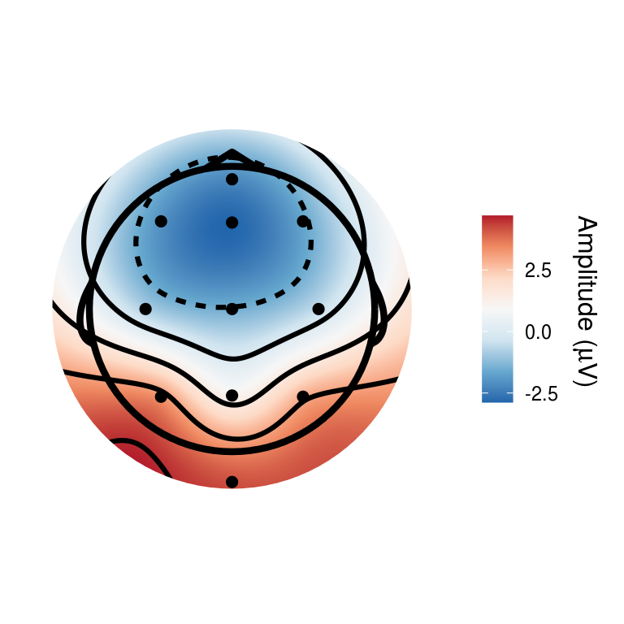
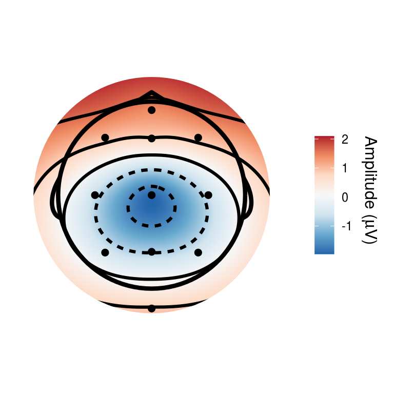
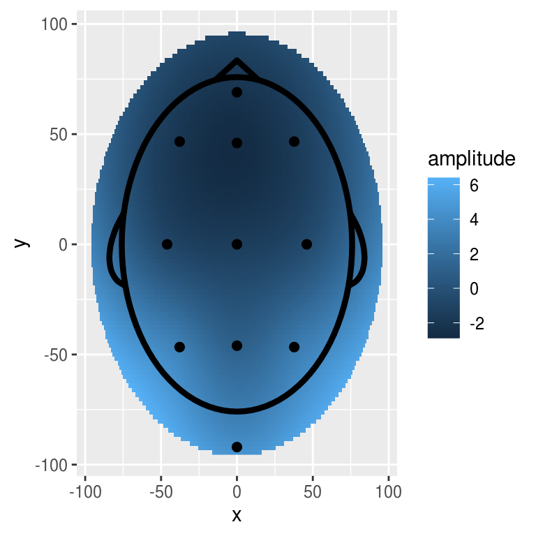
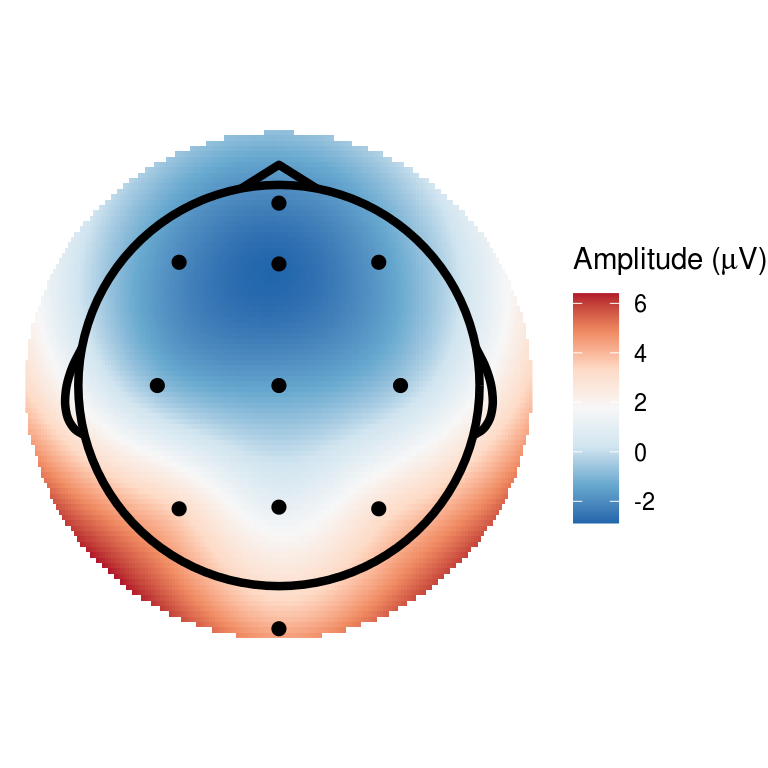
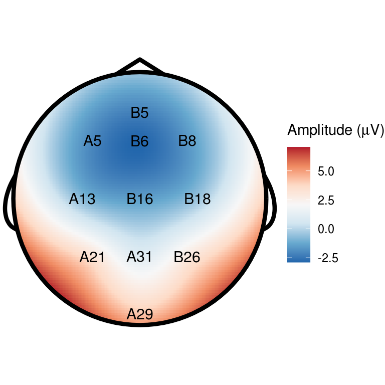
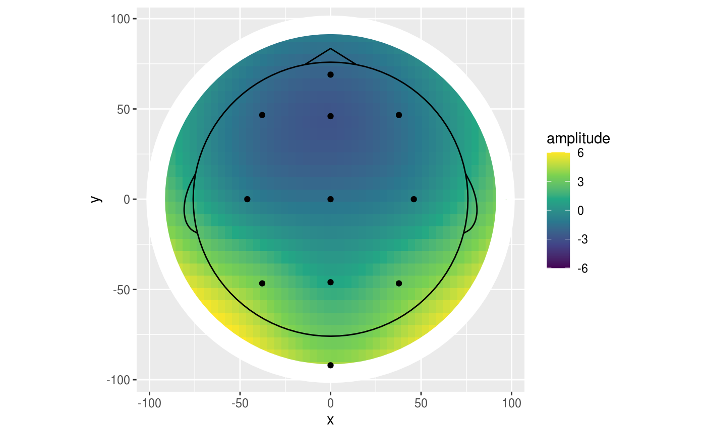

eegUtils has convenience functions for plotting and styling topographical scalp maps, which are very frequently used when exploring EEG and MEG data.
The topoplot() function uses ggplot2 to create a such a topographical map, with a cartoon head, ears and nose, and points or text labels indicating electrode positions or names.
Here’s an example using the built-in demo_epochs dataset.
topoplot(demo_epochs)
#> Warning: `...` must not be empty for ungrouped data frames.
#> Did you want `data = everything()`?
#> Warning: `cols` is now required.
#> Please use `cols = c(data)`
topoplot() has many different parameters that can be used to alter its appearance and select different parts of the data to be plotted. For example, here we select a specific time period to plot (the function averages over points within these limits), change the plotting so that all electrodes and interpolated surfaces are within the cartoon head, and highlight a specific electrode in white.
topoplot(demo_epochs,
time_lim = c(.1, .2),
palette = "viridis",
highlights = c("B5"),
interp_limit = "head")
#> Warning: `...` must not be empty for ungrouped data frames.
#> Did you want `data = everything()`?
#> Warning: `cols` is now required.
#> Please use `cols = c(data)`
topoplot() operates on several different types of eegUtils object, and has different default settings and behaviour for those objects. For example, for ICA decompositions, it plots the mixing matrix for each component.
demo_ica <- run_ICA(demo_epochs)
#> Warning in run_ICA.eeg_epochs(demo_epochs): Data is rank deficient. Detected
#> rank 10
topoplot(demo_ica, component = 2)
#> Warning: `...` must not be empty for ungrouped data frames.
#> Did you want `data = everything()`?
#> Warning: `cols` is now required.
#> Please use `cols = c(data)`
ggplot2 extensions - geom_topo()
For those who desire more control over the plots and are familiar with ggplot2, there are several custom geoms to help you do this. As a starter, the geom_topo() creates a full topographical plot, with cartoon head and points indicating coordinate locations. This is based on ggplot2’s geom_raster(), and has such has many parameters in common. But unlike geom_raster() it can handle an irregular grid.
fortify methods are included in the package so that most eegUtils objects can be passed directly to ggplot(). For more complete control, one might wish to convert the objects using as.data.frame() first, so that any desired manipulations such as averaging can be conducted first.

ggplot(demo_epochs,
aes(x = x,
y = y,
fill = amplitude)) +
geom_topo() +
scale_fill_distiller(palette = "RdBu") +
theme_void() +
coord_equal() +
labs(fill = expression(paste("Amplitude (", mu,"V)")))
There are several different parameters that can be passed to geom_topo() to change the appearance of the plot.
ggplot(demo_epochs,
aes(x = x,
y = y,
fill = amplitude,
label = electrode)) +
geom_topo(grid_res = 200,
interp_limit = "head",
chan_markers = "text",
chan_size = 4) +
scale_fill_distiller(palette = "RdBu") +
theme_void() +
coord_equal() +
labs(fill = expression(paste("Amplitude (", mu,"V)"))) 
Building from the ground up
For those who want even more control, individual constituent parts can be added to the plots as below.
stat_scalpmap() adds an interpolated surface from an irregular grid of electrodes, rounded off as a circular shape. geom_head() adds a cartoon headshape. geom_channels() is a wrapper round geom_text() and geom_point() that prevents overplotting when submitting an eegUtils object directly, and can be used to plot channel locations as points or text labels. geom_mask() can be used to draw a circular masking ring around the edge of the interpolated surface, to smooth any rough edges. This is useful when using a low grid resolution, which is advisable when using facetting or animation. All of these geoms are customisable as standard ggplot2 geoms are.
ggplot(demo_epochs,
aes(x = x,
y = y,
fill = amplitude)) +
stat_scalpmap(grid_res = 60) + #based on geom_raster()
geom_mask(scale_fac = 1.4) + #based on geom_path()
geom_head() + #based on geom_path() and geom_curve()
geom_channels() + #based on geom_point() and geom_text()
scale_fill_viridis_c(limits = c(-6, 6), oob = scales::squish) +
coord_equal()